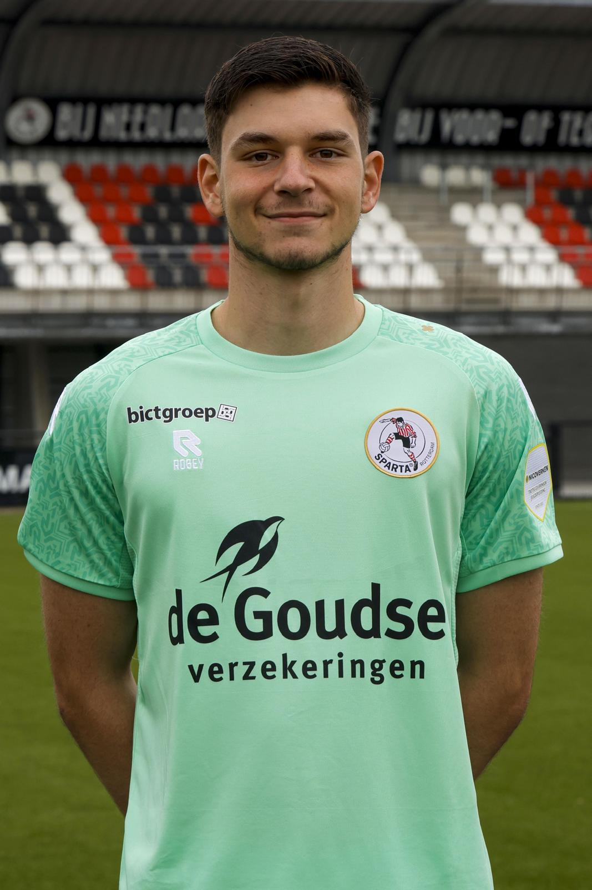

Wie ben ik?

Mijn naam is Benjamin Mrkalj, ik ben 20 jaar en woon in Rotterdam. Ik ben een student aan de Hogeschool Rotterdam en volg de opleiding Software Enineering. Mijn hobby's zijn gamen, programmeren en muziek luisteren. Ik ben geïnteresseerd in technologie en vind het leuk om nieuwe dingen te leren op het gebied van softwareontwikkeling.
Verder over mijzelf,ben ik buiten schooltijd ook keeper bij sportlust 46. maar daar was mijn voetbal carriérre niet begonnen, ik heb 2 jaar geleden profvoetbal gespeeld bij Sparta Rotterdam. Voetbal is en blijft een grote passie van mij, het is zelfs nog steeds mijn droom om hoog voetbal te spelen, maar het is altijd handig om een plan B te hebben. Vind jij het interessant om een video te kijken van mij toen ik tegen de beste van Nederland clubs speelde? klik dan op deze link. alvast veel kijk plezier!
Dat was een korte introductie over mezelf, hopelijk heb je een beter beeld van wie ik ben en waar mijn interesses liggen. Als er verder nog vragen of onduidelijkheden zijn, neem dan gerust contact met mij op via mijn schoolmail die staat onderin.